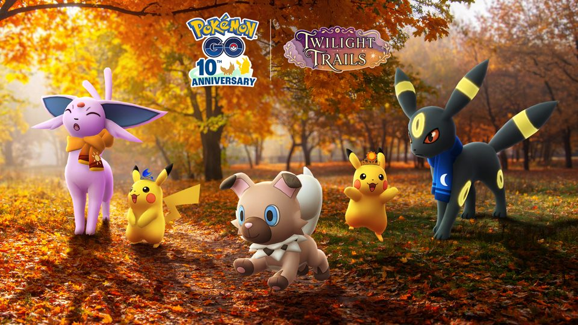

포켓몬고 황혼의 소원 필드리서치 11월 26일 10시 구간 전환
포켓몬고 황혼의 소원 필드리서치는 11월 26일 10:00을 경계로 만나는 포켓몬이 두 구간으로 갈립니다. 이벤트는 한국시간 11월 24일 10:00에 시작해 11월 30일 20:00까지 이어지는데요, 필드리서치 과제를 완료했을 때 나오는 목록이 중간에 한 번 바뀌어서 언제 과제를 끝내느냐에 따라 만나는 포켓몬이 달라지거든요.
어느 구간에 어떤 포켓몬이 나오는지 헷갈리기 쉬워서, 구간별 기간과 포켓몬을 시간표 하나로 모아 봤습니다. 아래 표만 훑어봐도 어느 쪽에서 과제를 완료할지 바로 정할 수 있어요.

황혼의 소원 이벤트 공식 배너예요.
출처: Pokémon GO 공식 공지 / Scopely (공식 공지 원문)
포켓몬고 황혼의 소원 필드리서치 구간 시간표
황혼의 소원 필드리서치는 11월 26일 10:00 전에는 과사삭벌레와 오라티프를, 그 시각부터 11월 30일 20:00까지는 장식을 단 팬텀·핼러윈 기념 모자 둥실라이드·그푸리를 만나는 구성입니다.
| Pokémon GO 공식 공지 기준 | ||
|---|---|---|
| 구간 | 기간 | 만나는 포켓몬 |
| 구간 1 | 11월 24일(화) 10:00 ~ 11월 26일(목) 10:00 | 과사삭벌레*, 오라티프 |
| 구간 2 | 11월 26일(목) 10:00 ~ 11월 30일(월) 20:00 | 장식을 단 팬텀*, 핼러윈 기념 모자 둥실라이드*, 그푸리 |
별표(*)는 운이 좋으면 색이 다른 포켓몬을 만날 수도 있다는 표시예요.
구간 1은 짧고 구간 2는 이벤트 마지막까지 길게 이어지는데요. 26일 목요일 오전 10시가 두 목록을 가르는 선이라서, 달력에는 이 시각 하나만 적어 두셔도 충분할 듯합니다.
구간 1 · 11월 24일 10:00부터 26일 10:00까지
구간 1은 11월 24일 10:00에 열려 26일 10:00에 닫히는데요, 그 안에 필드리서치 과제를 완료하면 과사삭벌레와 오라티프가 나오는 목록입니다.
이벤트가 열리는 시각과 구간 1이 시작되는 시각이 같아서, 24일 10시에 과제를 받아 곧바로 이 목록을 노릴 수 있습니다. 과사삭벌레에는 별표가 붙어 있으니 운이 좋으면 색이 다른 모습도 기대해 볼 만하고요.
시작이 화요일 오전이라 평일에 시간을 내기 쉽지 않은 분들도 많을 텐데요. 저라면 출근길이나 점심 무렵에 과제부터 받아 두고, 구간 1이 끝나기 전에 틈틈이 하나씩 완료해 보는 게 좋겠네요. 구간 1은 이틀짜리라 길게 잡고 기다릴 수 있는 시간은 아니거든요.
구간 2 · 11월 26일 10:00부터 30일 20:00까지
구간 2는 11월 26일 10:00부터 시작하는데요, 이때 필드리서치 과제를 완료하면 장식을 단 팬텀, 핼러윈 기념 모자 둥실라이드, 그푸리를 만납니다.
30일 월요일 20:00이 구간 2의 끝이고, 이벤트가 끝나는 시각과 같습니다. 장식을 단 팬텀과 핼러윈 기념 모자 둥실라이드에는 별표가 붙어 있어서 색이 다른 모습을 만날 수도 있습니다. 이 둘이 목표라면 마감 직전에 몰아서 하기보다 날짜를 나눠서 과제를 완료해 두고 싶네요. 월요일 저녁이 끝이라 일정이 빠듯할 수 있으니까요.
목표 포켓몬에 따라 이렇게 나눠 보세요
· 과사삭벌레나 오라티프가 목표라면: 구간 1 목록이라서 26일 오전 10시 전에 과제를 완료하는 쪽이 맞습니다.
· 장식을 단 팬텀, 핼러윈 기념 모자 둥실라이드, 그푸리가 목표라면: 구간 2 목록이라서 26일 오전 10시가 지난 뒤에 과제를 완료하면 됩니다.
· 양쪽 다 노린다면: 과제 하나는 구간 1이 끝나기 전에, 나머지는 26일 10시 이후에 나눠서 완료하는 것이 좋을 거 같아요.
저는 필드리서치 과제를 〔24일 첫 시각에 먼저 받아 두는 / 26일 10시가 지난 뒤에 받는 / 두 구간 모두 챙기는〕 편이 좋을 거 같아요.
황혼의 소원 메가 에너지와 이벤트 테마 포켓몬
황혼의 소원 필드리서치 과제를 완료하면 메가 에너지를 받고, 별가사리·리그레 같은 이벤트 테마 포켓몬도 만날 수 있습니다.
황혼의 소원 웹스토어·GO패스 쪽 공식 이미지예요.
출처: Pokémon GO 공식 공지 / Scopely (공식 공지 원문)
공식 공지에도 위 두 구간 목록은 이벤트 테마 과제와 따로 적혀 있습니다. 이벤트 이름은 황혼의 소원, 시즌 이름은 황혼의 여정이라 비슷해서 헷갈리기 쉬워요.
이벤트 보너스로는 색이 다른 별가사리와 색이 다른 리그레를 만날 확률이 올라갑니다. 야생에서도 삐삐·별가사리·리그레 등이 나오고 암멍이를 만날 수도 있어서, 필드리서치 말고도 이벤트 기간 내내 테마 포켓몬을 볼 기회가 있어요.
같이 열리는 레이드와 GO패스 마감
황혼의 소원에는 필드리서치 말고도 별1·별3·메가 레이드 라인업이 열리고, GO패스 리워드는 12월 2일 20:00에 만료됩니다.
- 별1 레이드: 태양 왕관을 쓴 피카츄*, 달 왕관을 쓴 피카츄*
- 별3 레이드: 태양 스카프를 두른 에브이*, 달 스카프를 두른 블래키*
- 메가 레이드: 메가독침붕*, 메가헬가*, 메가깜까미*, 메가썬더볼트*
전부 별표가 붙어 있어서 색이 다른 모습도 노려 볼 수 있고, 필드리서치 구간 시간표는 이 레이드 라인업과 따로 움직이는데요. 레이드 쪽은 이벤트 기간 안에서 시간 날 때 챙기셔도 됩니다.
마감은 두 줄기로 나뉩니다. 필드리서치 구간 2는 11월 30일 20:00에 끝나고, GO패스 리워드는 그보다 뒤인 12월 2일 20:00까지입니다.
- 11월 24일 10:00: 무료 GO패스 황혼의 소원이 자동으로 지급
- 11월 30일 20:00: GO 포인트를 모을 수 있는 마지막 시각
- 12월 2일 20:00: GO패스 리워드 만료
GO패스에는 독침붕·헬가·깜까미·썬더볼트의 메가 에너지가 리워드로 들어 있고, 메이저 마일스톤 티어 1(랭크 1)은 교환할 때 반짝반짝 포켓몬이 나올 확률과 반짝반짝 프렌드가 될 확률을 올려 줍니다. 티어 2(랭크 10)는 포켓몬을 잡았을 때 받는 별의모래가 2배이고, GO패스 디럭스는 3배예요.
필드리서치와 GO패스를 함께 굴리는 분들은 11월 30일 20:00을 한 번 더 눈여겨봐 두면 좋겠네요.
자주 묻는 질문
Q. 필드리서치 구간이 바뀌는 시각은 언제인가요?
11월 26일 10:00입니다. 이 시각 전에 과제를 완료하면 구간 1, 이후라면 구간 2 목록이니 노리는 포켓몬부터 정해 두고 완료 시점을 고르시면 됩니다.
Q. 구간 2 포켓몬은 언제까지 만날 수 있나요?
구간 2 목록은 11월 30일 20:00까지입니다. 30일이 월요일이라 주말 안에 하나쯤은 끝내 두는 쪽을 권해요.
Q. 그푸리를 만나려면 언제 과제를 완료해야 하나요?
26일 10:00 이후, 구간 2에 들어선 뒤여야 합니다. 구간 1에 완료한 과제로는 과사삭벌레와 오라티프 쪽 목록이 나옵니다.
구간이 한 번만 바뀌는 구조라서 챙기기는 어렵지 않은 편이네요. 위 표만 한 번 저장해 두면 24일부터 30일까지 헷갈릴 일이 줄어들 거예요. 26일 목요일 오전 10시만 기억해 두고, 원하는 포켓몬 쪽 구간에 맞춰 과제를 하나씩 완료해 봐요~
✔ 포켓몬 GO 같이 보기 좋은 내용
· 포켓몬고 크록스 쿠폰 3종, 피카츄·팬텀 푸린 공개 코드
· 포켓몬고 스페셜 배경 맥스배틀 받는 법, 커다란 발자국 11월 23일까지
· 포켓몬고 픽시 슈퍼 메가 레이드 데이 11/28, 슈퍼 맥스와 챌린지 보너스
참고한 곳 (2026.11.18 기준)
· 포켓몬 GO 공식 뉴스 — 황혼의 소원